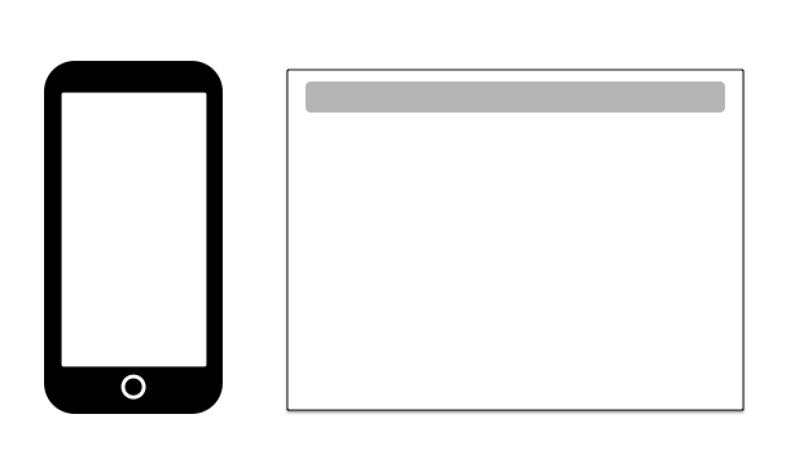

深入浅出移动WEB开发
目录
Viewport- 移动
Web布局 - 性能优化
- 交互相关
第一部分 - Viewport
- 像素基础
Viewport视图meta标签(Viewport)
像素基础
一张 750 * 1334 的图片能否在iPhone6完全撑开铺满？
px:CSS pixels 逻辑像素dp,pt:device independent pixels 设备无关dpr:device pixel ratio 设备像素缩放比
window.devicePixelRatio
计算公式：1px = (dpr)^2 * dp
为什么在Chrome的中，我们看到的是375 * 627呢？
因为dpr = 2
(iPhone6 Plus dpr = 3)
平面上： 1px = (2)^2 *dp => 750dp * 1334dp
维度上： 1px = 2 * dp => 375px * 627px
PPI:单位英寸内的像素密度
以iPhone6为栗子：
ppi = 根号(1334^2 + 750^2) / 4.7 = 326ppi
Viewport
手机浏览器默认为我们做了两件事
- 页面渲染在一个980px的viewport(ios)
- 缩放
meta标签(Viewport)
minimal-ui
The minimal-ui viewport property is no longer supported in iOS 8.
我们需要为移动web做写特殊样式处理
(思考下，有的时候，我们是不是要完美还原设计稿)
- 高清图
- 一像素边框
- rem & 模拟vw
- 单/多行文本溢出
高清图
- 图片服务器
- 定死尺寸
一像素边框
- 0.5px
- 元素scale
.scale{ position: relative; } .scale:after{ content:""; position: absolute; bottom:0px; left:0px; right:0px; border-bottom:1px solid #ddd; -webkit-transform:scaleY(.5); -webkit-transform-origin:0 0; } - 页面scale
rem & 模拟vw
- rem：相对长度单位。相对于根元素(即html元素)font-size计算值的倍数
- vw: 相对于视口的宽度。视口被均分为100单位的vw
html {font-size: 32px;}
//iphone 6
@media (min-device-width : 375px) {
html{font-size: 64px;}
}
// iphone6 plus
@media (min-device-width : 414px) {
html{font-size: 75px;}
}但是考虑到Android，怎么办？
rem = document.documentElement.clientWidth * dpr / 10var dpr, rem, scale;
var docEl = document.documentElement;
var fontEl = document.createElement('style');
var metaEl = document.querySelector('meta[name="viewport"]');
dpr = window.devicePixelRatio || 1;
rem = docEl.clientWidth * dpr / 10;
scale = 1 / dpr;
// 设置viewport，进行缩放，达到高清效果
metaEl.setAttribute('content',
'width=' + dpr * docEl.clientWidth
+ ',initial-scale=' + scale + ',maximum-scale='
+ scale + ', minimum-scale='
+ scale + ',user-scalable=no');
// 设置data-dpr属性，留作的css hack之用
docEl.setAttribute('data-dpr', dpr);
// 动态写入样式
docEl.firstElementChild.appendChild(fontEl);
fontEl.innerHTML = 'html{font-size:' + rem + 'px!important;}';
// 给js调用的，某一dpr下rem和px之间的转换函数
window.rem2px = function(v) {
v = parseFloat(v);
return v * rem;
};
window.px2rem = function(v) {
v = parseFloat(v);
return v / rem;
};
window.dpr = dpr;
window.rem = rem;单/多行文本溢出
div {
overflow: hidden;
white-space: nowrap:
text-overflow: ellipsis;
}div {
overflow: hidden;
text-overflow: ellipsis;
display: -webkit-box;
-webkit-line-clamp: 5;
-webkit-box-orient: vertical;
}第二部分 - 移动Web布局
display: flex
弹性
- flex-grow
- flex-shrink
- flex-basis
两个公式
- grow: flex-basis + flow-grow/sum(flow-grow) * remain
- shrink: flex-basis + flow-shrink/sum(flow-shrink) * remain
所以，拥抱flex
第三部分 - 性能优化
- 页面渲染过程
- 重排 & 重绘
- 高消耗样式列表
- 硬件加速（translate3d, will-change)
- 读写样式分离
页面渲染过程
- HTML代码转化成DOM
- CSS代码转化成CSSOM（CSS Object Model）
- 结合DOM和CSSOM，生成一棵渲染树（包含每个节点的视觉信息）
- 生成布局（layout），即将所有渲染树的所有节点进行平面合成
- 将布局绘制（paint）在屏幕上
其中，第4步(flow)和第5步(paint)比较耗时
网页生成的时候，至少会渲染一次。用户访问的过程中，还会不断重新渲染。
- 修改DOM
- 修改样式
- 用户事件(页面滚动、输入框键入文字、改变窗口大小)
"重绘(repaint)"不一定需要"重排(reflow)"，"重排"必然导致"重绘"，硬件加速(Composite)，跳过这两个阶段。

常见重排属性
| width | height | padding | margin |
| display | border-width | border | top |
| position | font-size | float | text-align |
| overflow-y | font-weight | overflow | left |
| font-family | line-height | vertical-align | right |
| clear | white-space | bottom | min-height |
常见重绘属性
| color | border-style | visibility | background |
| text-decoration | background-image | background-position | background-repeat |
| outline-color | outline | outline-style | border-radius |
| outline-width | box-shadow | background-size |
常见高消耗样式
background-attachment/border-radius/box-shadow/text-shadow/gradient
硬件加速
硬件加速依赖于浏览器渲染页面使用的layering model，当特定的操作（CSS 3D变形）作用于页面上的一个元素，元素移动到它自己的layer，在这个layer中元素合一不受页面其他元素的干扰独立渲染，然后复合到页面中去。在这种隔离内容渲染的工作方式下，如果页面的变化仅仅是该元素的变形，其余部分不必被重新渲染，这会带来显著的速度优势。值得注意的是只有3D变形会有自己的layer，2D变形不会。
- translate3d()
- will-change
will-change使用时候的注意
- 不要声明太多属性或为太多元素声明
- 给浏览器足够的时间工作
- 变化完成后移除will-change
避免无意识的创建layer
硬件加速的坑
- 3D 或透视变换(perspective transform) CSS 属性
- 使用加速视频解码的 元素
- 拥有 3D (WebGL) 上下文或加速的 2D 上下文的 元素
- 混合插件(如 Flash)
- 对自己的 opacity 做CSS animation或使用一个transition的元素
- 拥有加速 CSS 过滤器的元素
- 元素有一个包含复合层的后代节点(换句话说，就是一个元素拥有一个子元素，该子元素在自己的层里)
- 元素有一个 z-index 较低且包含一个复合层的兄弟元素(换句话说就是该元素在复合层上面渲染)
所以，使用3D硬件加速提升动画性能时，最好给元素增加一个z-index属性，人为干扰复合层的排序，可以有效减少chrome创建不必要的复合层，提升渲染性能，移动端优化效果尤为明显。
读写样式分离
前面提到，DOM变动和样式变动，都会触发重新渲染。但是，浏览器已经很智能了，会尽量把所有的变动集中在一起，排成一个队列，然后一次性执行，尽量避免多次重新渲染。
浏览器已经很智能了，会尽量把所有的变动集中在一起，排成一个队列，然后一次性执行，尽量避免多次重新渲染。
但是这样的话~
var h1 = element1.clientHeight;
element1.style.height = (h1 * 2) + 'px';
var h2 = element2.clientHeight;
element2.style.height = (h2 * 2) + 'px';
var h3 = element3.clientHeight;
element3.style.height = (h3 * 2) + 'px';
// Read
var h1 = element1.clientHeight;
var h2 = element2.clientHeight;
var h3 = element3.clientHeight;
// Write
element1.style.height = (h1 * 2) + 'px';
element2.style.height = (h2 * 2) + 'px';
element3.style.height = (h3 * 2) + 'px';
document.body.addEventListener('click', function() {
var h1 = element1.clientHeight;
element1.style.height = (h1 * 2) + 'px';
});
document.body.addEventListener('click', function() {
var h2 = element2.clientHeight;
element2.style.height = (h2 * 2) + 'px';
});使用requestAnimationRequest推迟执行
document.body.addEventListener('click', function() {
// Read
var h1 = element1.clientHeight;
// Write
requestAnimationFrame(function() {
element1.style.height = (h1 * 2) + 'px';
});
});
document.body.addEventListener('click', function() {
// Read
var h2 = element2.clientHeight;
// Write
requestAnimationFrame(function() {
element2.style.height = (h2 * 2) + 'px';
});
});WebAnimations
Web动画API（Web Animations API）提供了CSS、SVG动画的单一接口。它具有更好的性能、更强的时间控制、动画回放和灵活统一的JavaScript编程接口
第四部分 - 交互相关
- click-tap-点击延时
- 滚动 -webkit-overflow-scrolling: touch;
- touch-action
- 避免在输入事件中修改样式
穿透的解决方案
- "上下"都用tap（如果下层是a标签）
- e.preventDefault阻止真实click
- FastClick
滚动
- body滚动
- 局部滚动 -webkit-overflow-scrolling: touch;
- iScroll
touch-action
- touch-action: auto | none | pan-x | pan-y | manipulation | double-tap-zoom
$(window).on('scroll', function() {
window.requestAnimationFrame(scrollHandler);
});